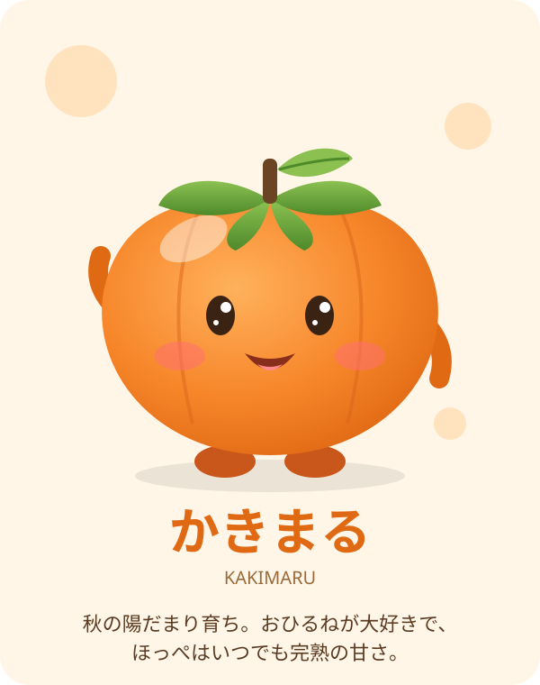

まんまるボディ
つやつやのオレンジ色のからだは、秋の日ざしをたっぷり浴びた証。頭のへたと小さな葉っぱがチャームポイントです。

つやつやのオレンジ色のからだは、秋の日ざしをたっぷり浴びた証。頭のへたと小さな葉っぱがチャームポイントです。
縁側の陽だまりを見つけると、すぐにうとうと。ゆっくり休むほど甘くなる、と本人は信じています。
だれにでも元気に手をふる人なつっこい性格。ほんのり赤いほっぺは、うれしいときにもっと赤くなります。
柿はビタミンCを多く含む果物のひとつ。中くらいの柿1個で、1日の目安量のかなりの部分をまかなえるといわれています。
熟すほどにとろりと甘くなる柿。かため派の「富有柿」、やわらか派の「熟柿」など、食感で好みが分かれるのも楽しみです。
渋柿も皮をむいて干せば、あんぽ柿や干し柿に。軒先にずらりと並ぶ柿のれんは、日本の秋冬の風物詩です。
学名は Diospyros kaki。「KAKI」の名で海外にも知られる、日本を代表する秋の味覚です。
昔からそういわれるほど、柿は秋の元気の味方でした。